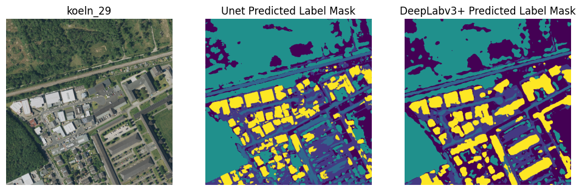

Land cover, pixel by pixel
I trained U-Net and DeepLabV3+ models to label land cover in satellite and aerial images. The project compares their predictions and documents where they confuse buildings, roads, and other classes.
TensorFlowU-NetDeepLabV3+
Read the case study